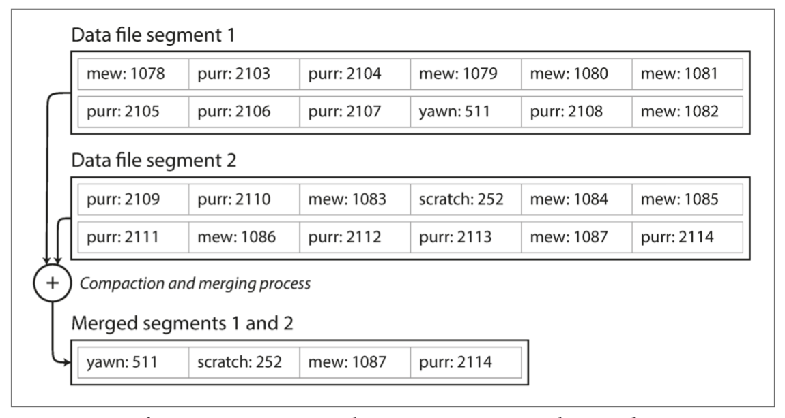
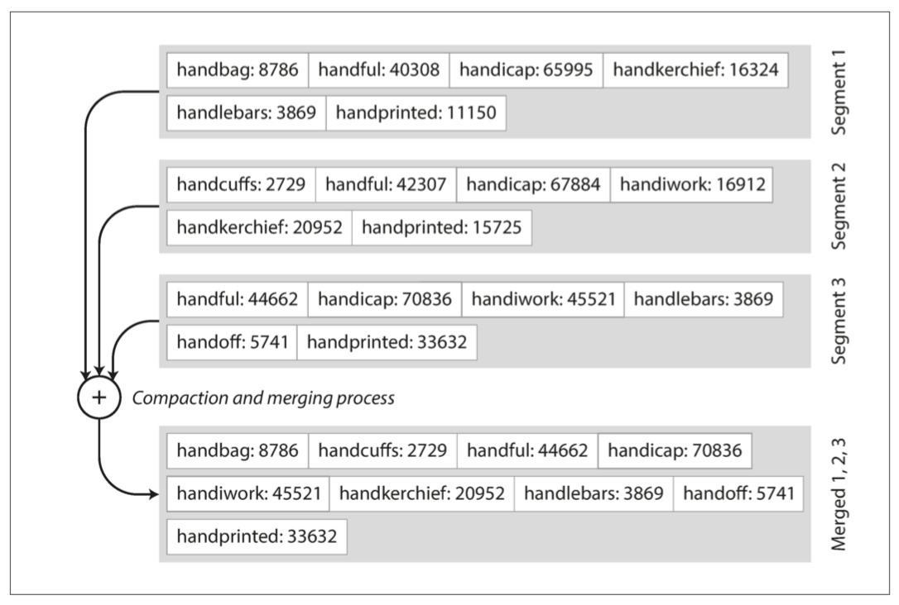
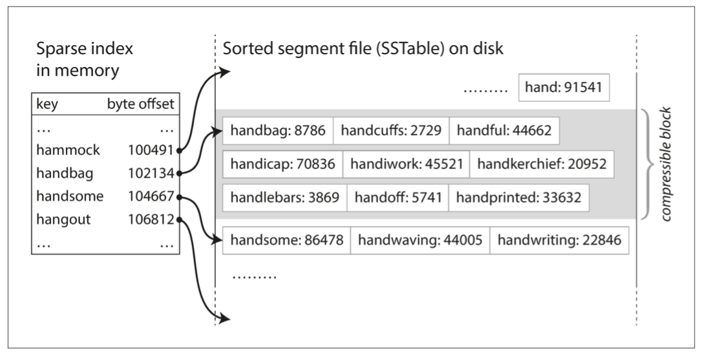
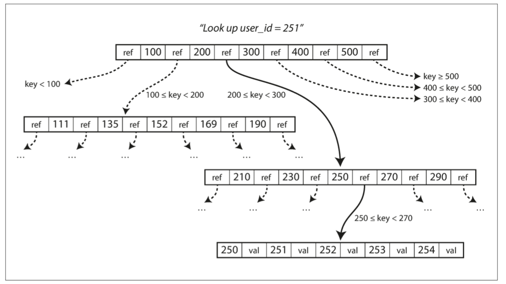
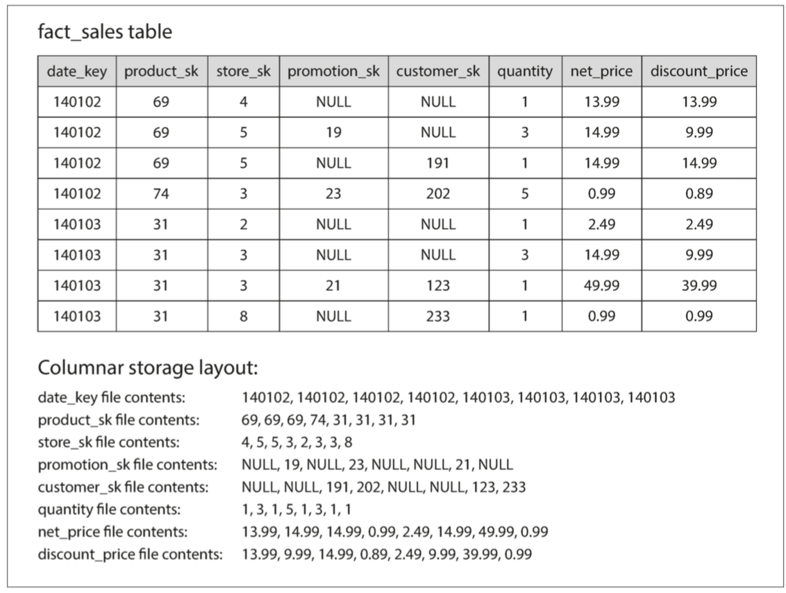

DDIA 阅读笔记第三章：存储与检索
摘要
本章主要介绍了数据库的索引结构及原理，并讨论了 OLTP 和 OLAP 数据库的不同。前半部分是摘抄笔记的形式，后半部分的讨论比较宽泛，直接摘抄原文高亮重点了。
数据库的基础功能：
- 写入：把数据保存起来
- 读取：返回保存的数据
应用开发者一般不需要过度关注数据库的底层原理，但当需要数据库选型时，只有了解数据引擎的特点及优劣，才能选择出对负载友好的数据引擎。例如事务型（transactional）和分析型（analystics）的负载，适合的数据引擎会有较大差异。
本章研究两大类存储引擎：日志结构（log-structured） 的存储引擎，以及面向页面（page-oriented） 的存储引擎（例如 B 树）。
驱动数据库的数据结构
一个简单的 kv 数据库可以用 bash 函数实现：
1 |
|
原理是维护一个只追加的日志文件。其中，db_set 追加新的 kv 对，db_get 从日志文件中检索 key 所对应的最新 value。该实现中：
- 写是非常高效的。因为磁盘的顺序写入速度远超随机写入。
- 读非常低效，最坏 O (n) 复杂度，n 为记录条数。
日志的含义：并不狭义指代人类可读的应用日志。在本书中，指代的是顺序写入的记录、不一定人类可读，有可能是二进制的格式，用于其他程序分析。
- 许多数据库在内部使用了日志（log），也就是一个 仅追加（append-only） 的数据文件，但会考虑并发控制，以及回收磁盘空间，避免日志无限增长。
为了提高读的效率，需要添加索引。索引是源于存储数据本身的额外数据：
- 索引的增删不改变数据本身
- 增加索引可以优化检索效率
- 增加索引会带来维护索引的写开销
- 应用往往需要根据查询模式，建立合适的索引，达到成本 - 收益的 trade-of
哈希索引
在内存中维护 key-value 磁盘偏移的映射关系，如下图所示。

读取时，先读取 key 对应的最新 value 的 offset，再在磁盘中读取 value。写入时，新建记录，更新 offset。
- Bitcask 就是这么做的，可以提供高效的读写，但要求所有的 key 必须能够保存在内存中
- 适用于 key 少，值经常更新的场景
- 读取时，如果页面在缓存中，不需要磁盘 io
压缩与合并
为了避免日志文件无限增长，做法把日志分为多个不可变的段，是当日志文件到达指定大小后，新建日志文件，并对已有的日志进行压缩与合并：
- 压缩（compaction）：将一个日志内的重复 key-value 合并，只保留最新的 value
- 合并（merge）：将压缩后的多个小日志段合并
- 合并是写入一个新的段，而不是修改已有的段

每个段需要维护一个 hash 表，当查找一个 key 时，从最新的段开始，逐个查询是否存在对应的 value offset。
亟待解决的问题
为了构建一个更实用的实现，还需要关心的问题：
- 文件格式：CSV 存储日志低效，使用二进制存储会更加高效
- 删除 key：需要增加一条删除记录（tombstone，墓碑），用于在 merge 时标识丢弃所有 k-v 对
- 故障恢复：如果数据库宕机，内存里的 hash 索引会丢失。虽然可以通过逐行扫描重建索引，但开销太大。Bitcask 将每个段的 hash 存储到了磁盘里，可以重启时快速加载到内存。
- 部分写入：数据库可能在任意时刻宕机，可能出现记录部分写入的情况。Bitcask 通过校验和机制检测部分写入的情况。
- 并发控制：由于写操作是以严格顺序的顺序附加到日志中的，所以常见的实现选择是只有一个写入器线程。数据文件段是附加的，或者是不可变的，所以它们可以被多个线程同时读取。
虽然追加写入看起来比覆盖旧值更浪费空间，但是：
- 追加写入是顺序写，性能通常大幅快于随机写入
- 覆盖旧值可能出现部分新、部分旧值的棘手情况，追加写入则不会
- 段旧的压缩和融合避免了段的数量和空间随着时间持续增加
缺点
- hash 表必须能够完全容纳在内存中。如果 hash 表存到磁盘里，随机读效率会非常低下。
- 不支持顺序遍历，例如不能遍历 kitty00000 到 kitty99999 中间的所有 key。
SSTables 与 LSM 树
在上面的段中，段内 key 无序存储，这不仅限制了顺序遍历，也给 merge 带来了开销。
排序字符串表（Sort String Tables，SSTables）是对上述格式的改进，要求：
- 段内键值对的序列按键排序
- merge 完成的段内不能包含重复 key（压缩操作已经实现了）
虽然 SSTables 看起来违反了只追加的特性，但后文再涉及这一方面。
相较于之前的无序段，SSTables 有以下优点：
merge 更加简单高效。有序段 merge 过程类似归并排序，只不过是新段的值优先级更高。即使段大小超出了可用内存，也可以处理。合并完的段也天然有序。

无需将所有的 key 装入内存。段的有序性使得可以仅在内存中保留稀疏的 key-offset 对，其余的 key 可以通过定位 offset 区间，再在区间内遍历即可。可以按 KB 为单位合并 kv 对为块，只在内存中保存块基址的 kv 映射。由于 io 是以页为单位（通常 4KB），这保证了 key 的查找可以在一次 io 内完成。

- 进一步，还可以将块进行压缩，来减少空间占用。
构建和维护 SSTables
在磁盘里维护有序性是可能的，例如 B + 树，是以页面为单位存储有序记录。但是，在内存中维护有序性更简单，可以直接复用有序结构，例如红黑树、AVL 树。
可以基于平衡树设计以下的存储引擎：
- 当写请求到来时，在内存中完成平衡树更新。这个平衡树也被称为内存表（memtable）
- 当内存表空间占用超过阈值，例如几 MB 之后，将它转换为 SSTable 写入磁盘。这个过程非常高效，先序遍历平衡树即可。当写入完成后，后续写请求维护在新的 memtable。
- 读请求到来时，先在 memtable 查询，然后从新到旧遍历 SSTables。
- 后台完成旧段的压缩和合并，忽略被覆盖或者删除的记录。
这个模式基本完美，但有一个问题：如果数据库宕机了，memtable 中的变更会丢失。为了解决这个问题，在磁盘上维护一个只追加的日志（参考上一节，无序），对 memtable 的写入会立刻 append 到日志后。这个日志仅用于恢复未落盘的 memtable，当 memtable 写入 SSTable 后，相关日志就可以删除了。
个人理解：
- 如果是写入 memtable 后再产生日志，还是可能出现中间宕机数据丢失的情况。
- 如果想完全保证可靠性，需要 WAL 日志（write-ahead log），在更改 memtable 前，先将日志落盘，但这会阻塞写入。
构建 LSM 树
这里描述的算法本质上是 LevelDB 和 RocksDB 中使用的 kv 存储引擎库，它们被设计嵌入到其他应用程序中。
这种索引结构最早被命名为日志结构合并树（Log-Structured Merge-Tree），建立在日志结构文件系统的基础上。这种基于压缩和合并有序文件的存储引擎通常被称为 LSM 树。
Lucene，Elastic Search 使用的索引引擎，就是使用了类似 SSTable 的有序文件，保存 term 到文档 id 列表的映射关系。
性能优化
对于不存在 key，LSM 树需要遍历 memtable 和所有 SSTables 才能确定不存在，开销很大。
可以使用额外的布隆过滤器（Bloom filter - Wikipedia）保存存在的 key。
- 布隆过滤器是一种空间高效的概率数据结构，可以用于判断一个 key 是否存在，只支持新增 key、不支持删除 key。
- 可能会出现假阳性（false positive），但不会出现假阴性（false negative）。换而言之，布隆过滤器给出的答案是二者之一：“可能存在” 或 “绝不存在”
- 原理是一个大的 bitmap，和 k 个不同的 hash 函数：
- 写入时，使用 k 个 hash 函数获取 k 个位置，都置为 1
- 查询时，使用 k 个 hash 函数获取 k 个位置，如果有任意一个位置不为 1，则不存在；否则可能存在
SSTables 压缩合并的时机和顺序，有不同的策略， 最常见的有两种：
Choose a Compaction Strategy | ScyllaDB Docs LSM Tree 的 Leveling 和 Tiering Compaction - 知乎
- 大小分层压缩（size-tiered compaction）：新而小的 SSTables 被合并到老而大的 SSTables 中，HBase 使用此策略。
- 水平压缩（level compaction）：key 的范围被拆分成更小的 SSTables，而较旧的数据被移动到单独的 level，这使得压缩能够更加递增地进行，并且使用更少的磁盘空间。
即使有许多微妙的东西，LSM 树的基本思想 —— 保存一系列在后台合并的 SSTables —— 简单而有效。即使数据集比可用内存大得多，它仍能继续正常工作。由于数据按排序顺序存储，你可以高效地执行范围查询（扫描所有从某个最小值到某个最大值之间的所有键），并且因为硬盘写入是连续的，所以 LSM 树可以支持非常高的写入吞吐量。
B 树
比 LSM 树更为常见的索引结构，与 LSM 树的相似点在于都是使用磁盘保存有序文件。不同的是：
- LSM 树使用可变大小的段存储，通常为几 MB
- B 树使用固定大小的块 / 页存储，通常 4KB（操作系统通常页面大小），以页的维度进行读写
书中这节介绍的应该是 B + 树，更清楚一点，我先参考维基百科介绍下 B 树和 B + 树。
数据结构中的 B 树
B-tree - Wikipedia 在计算机科学中，B 树是一种自平衡的树结构，存储了有序数据，允许单点查询、范围查询、插入和删除。B 树是二叉查找树的泛化版，允许节点有多于两个子节点。与其他的二叉查找树不同，B 树非常适合大块读写的存储系统，例如数据库和文件系统。
一棵 m 阶的 B 树满足以下条件：
- 每个节点至多有 m 个子节点
- 每个节点至少有 m/2 个子节点（向上取整）
- 根节点至少有两个子节点，除非它是叶节点
- 所有的叶节点出现在同一层
- 一个有 k 个子节点的非叶节点有着 k-1 个 key，作为边界分割得到 k 个 key 区间，对应 k 个子节点
B 树中的节点可以分为三类：
- 内部节点（Internal nodes）：非根节点和叶节点
- 子节点数量必须在 [m/2,m] 之间，当插入或删除导致数量不满足要求时，会触发页面的拆分或合并，这个过程可能是递归的
- 根节点：唯一
- 子节点数量上限与内部节点一致，但无下限
- 叶节点：都在同一层
- 定义不统一：Knuth 将叶节点定义为实际的数据对象或块，即叶节点只存放数据；其他作者将这些数据对象之上一层的内部节点定义为叶节点，叶节点存放 key - 数据引用
B 树的定义不是一致的，包括阶、叶节点等术语，但这些与 B 树的本质思想无关。在 B 树中，每个节点都会保存 value，除了叶节点。（这里应该描述的是数据块定义下的叶节点）。
- 个人理解，按纯粹多叉查找树定义，B 树的每个节点都会存放 key-value。过早地掺杂一些数据引擎实现的考量，会影响对数据结构本身的理解。
B + 树
为存储块类型的数据而设计，例如文件系统、数据库，与 B 树类似，不同的是：
- 只有叶子结点上存放 value，这使得 B + 树的扇出（节点包含子节点的数量）非常高，通常可以达到 100 以上，进而提高检索效率
- 这里的扇出是指固定页面大小情况下（例如典型页面 4KB），由于非叶节点减少了大块数据的存储，扇出就会显著提高
书中的 B 树
这里的 B 树实际指的 B + 树。
B 树中，每个页都对应一个唯一地址，可以互相引用，与指针类似，但是存储在磁盘上。形式上，B 树是一种多路查找树：
- 存在唯一的根节点，作为读写的起始页面
- 非叶子页面中，包含 k 个引用和 k-1 个 key 值
- 引用指向子页面
- key 值是引用 key 范围的边界
- 叶子节点，存储 key 和 value 值
- 对于大块 value，存储在叶子页面上可以有效提高整棵树的扇出（固定页大小的情况下）
下图展示一个 B 树查询的例子，查询 user_id=251 的 value，需要从根节点开始，逐层路由到叶子页面，再读取 value 值。

B 树中的子节点数量称为分支因子（branching factor），上图中分支因子是 6。在实践中，分支因子的大小取决于存储页面引用和范围边界所需的空间，但这个值通常是几百。
- 假设引用和边界各 8Bytes，分支因子上限约为 4K/16=512
- 在 B 树中存在阶的概念
B 树总是平衡的，包含 m 个 key 的 B 树的深度总是 O (logn)。大多数数据库的 B 树高为 3 或 4，一棵 4 层高的树，页面大小为 4KB，分支因子为 512，所能存储的数据大小为 256TB。
\[ 4KB*512^4=2^{38}KB=2^8TB \]
使 B 树变得可靠
B 树在插入和更新时，是就地修改页面，而不是像 LSM 一样追加日志，这带来了不一致问题：
- 如果插入新记录触发页面分裂，会导致多个页面的更新（叶子、父页面乃至更高祖先），如果过程中数据库宕机，就可能出现不一致问题，比如有个孤儿页面没有父指针。
- 需要 WAL 日志（Write-ahead logging - Wikipedia）来保证，也被称为 redo-log（重做日志）。思想是维护一个只追加的日志文件，在数据变更对数据库生效之前，必须先产生日志条目并保存到可靠介质中（如磁盘），进而保证了数据库宕机之后可以根据日志进行恢复。
- 并发读写导致的不一致。
- 需要加锁（latch）来保证。
- 对比之下 LSM 树更简单，段的融合在后台进行，不会干涉到到来的 query，并且原子化地用新段替换旧段
优化
B 树的一些优化：
- 使用 copy-on-write 机制处理修改，不使用加锁和 WAL 日志，例如 LMDB，这也可以简化并发处理。
- 压缩 key 提高内部节点扇出：key 只要能区分边界即可
- 个人感觉常用于字符串的 key，例如前缀索引
- 叶子页面在磁盘上按顺序排列，提高范围检索性能。页面在磁盘上的排列没有限制，这使得如果要范围查询扫描，可能需要 “跳来跳去 “，非常低效。因此，许多 B 树实现尝试将树布局，使得叶子页面按顺序出现在磁盘上。但是，随着树的增长，维持这个顺序是很困难的。相比之下，由于 LSM 树在合并过程中一次又一次地重写存储的大部分，所以它们更容易使顺序键在磁盘上彼此靠近。
- 树中添加额外的指针：例如叶子页面的左右兄弟节点间添加指针，允许不返回父节点的情况下顺序扫描。
- B 树的变体如分形树【22】借用一些日志结构的思想来减少磁盘寻道
LSM 树 vs B 树
通常，B 树被认为读高效，LSM 树被认为写高效。
- LSM 树的读需要遍历 memtable、SSTables，写只需要更新内存、追加日志即可
- B 树读写都需 3-4 次 IO
实际使用时，需要用真实负载测试系统，看看哪种结构更符合要求。
LSM 树的优点
一次写入中：
- B 树至少要更新两次，数据页 & wal 日志。如果涉及到页的拆分，次数会更多。而且 B 树写入是整页覆盖，即使只改动了少数几个 bytes。
- LSM 树中的压缩与合并也会导致多次写入。
写放大（write amplification）问题：一次写入会导致多次的磁盘写入
- 这会损害 SSD 的寿命，SSD 寿命中只能承载有限次的块覆盖
- 在写密集的任务中，磁盘的带宽是有限的，写放大问题会限制 1s 内能够处理的写数量
LSM 树的写吞吐通常会更大：
- 写放大率小
- 顺序写入比随机写入（B 树）更快，尤其是机械硬盘
此外，LSM 树可以被压缩以节省空间。B 树是以页为单位的，可能会存在页中有未使用的空间（例如刚刚拆分完的两个页，各空余一半）。而 LSM 树不是以页为单位，且周期性重写 SSTables，再搭配 leveled compaction 这样的压缩策略，可以高效地利用存储空间。
在许多固态硬盘上，固件内部使用日志结构化算法，将随机写入转变为顺序写入底层存储芯片，因此存储引擎写入模式的影响不太明显。但是，较低的写入放大率和减少的碎片对 SSD 仍然有利：更紧凑地表示数据可在可用的 I/O 带宽内提供更多的读取和写入请求。
LSM 树的缺点
后台的压缩与合并也会占据写磁盘带宽，进而可能影响到前台读写性能：
- 虽然存储引擎尝试只对增量数据做压缩，并且努力不影响前台读写，但是磁盘的资源限制决定了，容易出现一个前台读写需要等待昂贵的压缩完成之后，才可以进行。
- 这个问题对于吞吐、平均响应时间的影响不大，但是会影响高百分位点的性能。
- 对比之下，B 树的检索性能更稳定、可预测。
如果是在高写入吞吐下进行压缩，还会出现别的问题：例如前台读写占用太多带宽，导致后台不能及时压缩，段越来越多，直至耗尽空间。
- LSM 树一般不会限制写请求的速率，需要应用侧的监控
对比之下，B 树中一个 key 只会存储一份，不像 LSM 树中可能存储多份，这契合事务型数据库系统：通过 key 范围加锁保证隔离性。
B 树在数据库体系结构中是非常根深蒂固的，为许多工作负载提供始终如一的良好性能，所以它们不可能很快就会消失。在新的数据存储中，日志结构化索引变得越来越流行。没有快速和容易的规则来确定哪种类型的存储引擎对你的场景更好，所以值得进行一些经验上的测试。
其他索引结构
到目前为止，我们只讨论了关键值索引，它们就像关系模型中的主键（primary key） 索引。主键唯一标识关系表中的一行，或文档数据库中的一个文档或图形数据库中的一个顶点。数据库中的其他记录可以通过其主键（或 ID）引用该行 / 文档 / 顶点，并且索引用于解析这样的引用。
有二级索引也很常见。在关系数据库中，您可以使用 CREATE INDEX 命令在同一个表上创建多个二级索引，而且这些索引通常对于有效地执行联接而言至关重要。
一个二级索引可以很容易地从一个 kv 索引构建。主要的不同是键不是唯一的。即可能有许多行（文档，顶点）具有相同的键。这可以通过两种方式来解决：或者通过使索引中的每个值，成为匹配行标识符的列表（如全文索引中的发布列表），或者通过向每个索引添加行标识符来使每个关键字唯一。无论哪种方式，B 树和日志结构索引都可以用作辅助索引。
将值存储在索引中
索引中的关键字是查询搜索的内容，但是该值可以是以下两种情况之一：它可以是所讨论的实际行（文档，顶点），也可以是对存储在别处的行的引用。在后一种情况下，行被存储的地方被称为堆文件（heap file），并且存储的数据没有特定的顺序（它可以是仅附加的，或者可以跟踪被删除的行以便用新数据覆盖它们后来）。堆文件方法很常见，因为它避免了在存在多个二级索引时复制数据：每个索引只引用堆文件中的一个位置，实际的数据保存在一个地方。 在不更改键的情况下更新值时，堆文件方法可以非常高效：只要新值不大于旧值，就可以覆盖该记录。如果新值更大，情况会更复杂，因为它可能需要移到堆中有足够空间的新位置。在这种情况下，要么所有的索引都需要更新，以指向记录的新堆位置，或者在旧堆位置留下一个转发指针【5】。
在某些情况下，从索引到堆文件的额外跳跃对读取来说性能损失太大，因此可能希望将索引行直接存储在索引中。这被称为聚集索引。例如，在 MySQL 的 InnoDB 存储引擎中，表的主键总是一个聚簇索引，二级索引用主键（而不是堆文件中的位置）【31】。在 SQL Server 中，可以为每个表指定一个聚簇索引【32】。
在 聚集索引（clustered index） （在索引中存储所有行数据）和 非聚集索引（nonclustered index） （仅在索引中存储对数据的引用）之间的折衷被称为 包含列的索引（index with included columns）或覆盖索引（covering index），其存储表的一部分在索引内【33】。这允许通过单独使用索引来回答一些查询（这种情况叫做：索引 覆盖（cover） 了查询）【32】。
与任何类型的数据重复一样，聚簇和覆盖索引可以加快读取速度，但是它们需要额外的存储空间，并且会增加写入开销。数据库还需要额外的努力来执行事务保证，因为应用程序不应该因为重复而导致不一致。
多列索引
如果一次查询中涉及到多个列，但只能使用一个列的索引，检索效率显然不够理想。
最常见的多列索引被称为 连接索引（concatenated index） ，它通过将一列的值追加到另一列后面，简单地将多个字段组合成一个键（索引定义中指定了字段的连接顺序）。但这太丑陋了。
多维索引（multi-dimensional index） 是一种查询多个列的更一般的方法，这对于地理空间数据尤为重要。例如，餐厅搜索网站可能有一个数据库，其中包含每个餐厅的经度和纬度。当用户在地图上查看餐馆时，网站需要搜索用户正在查看的矩形地图区域内的所有餐馆。这需要一个二维范围查询，如下所示：
1 | SELECT * FROM restaurants WHERE latitude > 51.4946 AND latitude < 51.5079 |
一个标准的 B 树或者 LSM 树索引不能够高效地响应这种查询：它可以返回一个纬度范围内的所有餐馆（但经度可能是任意值），或者返回在同一个经度范围内的所有餐馆（但纬度可能是北极和南极之间的任意地方），但不能同时满足。
多维索引不仅可以用于地理位置。例如，在电子商务网站上可以使用维度（红色，绿色，蓝色）上的三维索引来搜索特定颜色范围内的产品，也可以在天气观测数据库中搜索二维（日期，温度）的指数，以便有效地搜索 2013 年的温度在 25 至 30°C 之间的所有观测资料。使用一维索引，你将不得不扫描 2013 年的所有记录（不管温度如何），然后通过温度进行过滤，反之亦然。 二维索引可以同时通过时间戳和温度来收窄数据集。这个技术被 HyperDex 使用【36】。
全文搜索和模糊索引
到目前为止所讨论的所有索引都假定你有确切的数据，并允许你查询键的确切值或具有排序顺序的键的值范围。他们不允许你做的是搜索类似的键，如拼写错误的单词。这种模糊的查询需要不同的技术。
例如，全文搜索引擎通常允许搜索目标从一个单词扩展为包括该单词的同义词，忽略单词的语法变体，搜索在相同文档中的近义词，并且支持各种其他取决于文本的语言分析功能。为了处理文档或查询中的拼写错误，Lucene 能够在一定的编辑距离内搜索文本【37】（编辑距离 1 意味着单词内发生了 1 个字母的添加、删除或替换）。
Lucene 为其词典使用了一个类似于 SSTable 的结构。这个结构需要一个小的内存索引，告诉查询需要在排序文件中哪个偏移量查找键。在 LevelDB 中，这个内存中的索引是一些键的稀疏集合，但在 Lucene 中，内存中的索引是键中字符的有限状态自动机，类似于 trie 【38】。这个自动机可以转换成 Levenshtein 自动机，它支持在给定的编辑距离内有效地搜索单词【39】。
其他的模糊搜索技术正朝着文档分类和机器学习的方向发展。
在内存中存储一切
本章到目前为止讨论的数据结构都是对硬盘限制的应对。与主内存相比，硬盘处理起来很麻烦。对于磁性硬盘和固态硬盘，如果要在读取和写入时获得良好性能，则需要仔细地布置硬盘上的数据。但是，我们能容忍这种麻烦，因为硬盘有两个显著的优点：它们是持久的（它们的内容在电源关闭时不会丢失），并且每 GB 的成本比 RAM 低。
随着 RAM 变得更便宜，每 GB 成本的论据被侵蚀了。许多数据集不是那么大，所以将它们全部保存在内存中是非常可行的，包括可能分布在多个机器上。这导致了内存数据库的发展。
某些内存中的键值存储（如 Memcached）仅用于缓存，在重新启动计算机时丢失的数据是可以接受的。但其他内存数据库的目标是持久性，可以通过以下方式实现
- 特殊的硬件（例如电池供电的 RAM）
- 将更改日志写入硬盘
- 将定时快照写入硬盘或者将内存中的状态复制到其他机器上
内存数据库重新启动时，需要从硬盘或通过网络从副本重新加载其状态（除非使用特殊的硬件）。尽管写入硬盘，它仍然是一个内存数据库，因为硬盘仅出于持久性目的进行日志追加，读取请求完全由内存来处理。写入硬盘同时还有运维上的好处：硬盘上的文件可以很容易地由外部程序进行备份、检查和分析。
诸如 VoltDB、MemSQL 和 Oracle TimesTen 等产品是具有关系模型的内存数据库，供应商声称，通过消除与管理硬盘上的数据结构相关的所有开销，他们可以提供巨大的性能改进【41,42】。 RAM Cloud 是一个开源的内存键值存储器，具有持久性（对内存和硬盘上的数据都使用日志结构化方法）【43】。 Redis 和 Couchbase 通过异步写入硬盘提供了较弱的持久性。
反直觉的是，内存数据库的性能优势并不是因为它们不需要从硬盘读取的事实。只要有足够的内存即使是基于硬盘的存储引擎也可能永远不需要从硬盘读取，因为操作系统在内存中缓存了最近使用的硬盘块。相反，它们更快的原因在于省去了将内存数据结构编码为硬盘数据结构的开销【44】。
除了性能，内存数据库的另一个优势是提供了难以用基于硬盘的索引实现的数据模型。例如，Redis 为各种数据结构（如优先级队列和集合）提供了类似数据库的接口。因为它将所有数据保存在内存中，所以它的实现相对简单。
最近的研究表明，内存数据库体系结构可以扩展到支持比可用内存更大的数据集，而不必重新采用以硬盘为中心的体系结构【45】。所谓的 反缓存（anti-caching） 方法通过在内存不足的情况下将最近最少使用的数据从内存转移到硬盘，并在将来再次访问时将其重新加载到内存中。这与操作系统对虚拟内存和交换文件的操作类似，但数据库可以比操作系统更有效地管理内存，因为它可以按单个记录的粒度工作，而不是整个内存页面。尽管如此，这种方法仍然需要索引能完全放入内存中（就像本章开头的 Bitcask 例子）。
如果 非易失性存储器（non-volatile memory, NVM） 技术得到更广泛的应用，可能还需要进一步改变存储引擎设计【46】。
在早期的业务数据处理过程中，一次典型的数据库写入通常与一笔 商业交易（commercial transaction） 相对应：卖个货，向供应商下订单，支付员工工资等等。但随着数据库开始应用到那些不涉及到钱的领域，术语 交易 / 事务（transaction） 仍留了下来，用于指代一组读写操作构成的逻辑单元。目前这是一个新的研究领域，值得关注。
事务处理还是分析？
在早期的业务数据处理过程中，一次典型的数据库写入通常与一笔 商业交易（commercial transaction） 相对应：卖个货，向供应商下订单，支付员工工资等等。但随着数据库开始应用到那些不涉及到钱的领域，术语 交易 / 事务（transaction） 仍留了下来，用于指代一组读写操作构成的逻辑单元。
事务不一定具有 ACID（原子性，一致性，隔离性和持久性）属性。事务处理只是意味着允许客户端进行低延迟的读取和写入 —— 而不是只能定期运行（例如每天一次）的批处理作业。
即使数据库开始被用于许多不同类型的数据，比如博客文章的评论，游戏中的动作，地址簿中的联系人等等，基本的访问模式仍然类似于处理商业交易。应用程序通常使用索引通过某个键查找少量记录。根据用户的输入插入或更新记录。由于这些应用程序是交互式的，这种访问模式被称为 在线事务处理（OLTP, OnLine Transaction Processing）。
但是，数据库也开始越来越多地用于数据分析，这些数据分析具有非常不同的访问模式。通常，分析查询需要扫描大量记录，每个记录只读取几列，并计算汇总统计信息（如计数、总和或平均值），而不是将原始数据返回给用户。例如，如果你的数据是一个销售交易表，那么分析查询可能是：
- 一月份每个商店的总收入是多少？
- 在最近的推广活动中多卖了多少香蕉？
- 哪个牌子的婴儿食品最常与 X 品牌的尿布同时购买？
这些查询通常由业务分析师编写，并提供报告以帮助公司管理层做出更好的决策（business intelligence，商业智能）。为了将这种使用数据库的模式和事务处理区分开，它被称为 在线分析处理（OLAP, OnLine Analytice Processing）。OLTP 和 OLAP 之间的区别并不总是清晰的，但是一些典型的特征在 表 3-1 中列出。
表 3-1 比较事务处理和分析系统的特点
| 属性 | 事务处理系统 OLTP | 分析系统 OLAP |
|---|---|---|
| 主要读取模式 | 查询少量记录，按键读取 | 在大批量记录上聚合 |
| 主要写入模式 | 随机访问，写入要求低延时 | 批量导入（ETL）或者事件流 |
| 主要用户 | 终端用户，通过 Web 应用 | 内部数据分析师，用于决策支持 |
| 处理的数据 | 数据的最新状态（当前时间点） | 随时间推移的历史事件 |
| 数据集尺寸 | GB ~ TB | TB ~ PB |
OLAP 中的首字母 O（online）的含义并不明确，它可能是指查询并不是用来生成预定义好的报告的事实，也可能是指分析师通常是交互式地使用 OLAP 系统来进行探索式的查询。
起初，事务处理和分析查询使用了相同的数据库。 SQL 在这方面已证明是非常灵活的：对于 OLTP 类型的查询以及 OLAP 类型的查询来说效果都很好。尽管如此，在二十世纪八十年代末和九十年代初期，企业有停止使用 OLTP 系统进行分析的趋势，转而在单独的数据库上运行分析。这个单独的数据库被称为 数据仓库（data warehouse）。
数据仓库
一个企业可能有几十个不同的交易处理系统：面向终端客户的网站，控制实体商店的收银系统，跟踪仓库库存，规划车辆路线，供应链管理，员工管理等。这些系统中每一个都很复杂，需要专人维护，所以系统最终都是自动运行的。
OLTP 系统往往对业务运作至关重要，因而通常会要求 高可用 与 低延迟。所以 DBA 会密切关注他们的 OLTP 数据库，他们通常不愿意让业务分析人员在 OLTP 数据库上运行临时分析查询，因为这些查询通常开销巨大，会扫描大部分数据集，这会损害同时执行的事务的性能。
相比之下，数据仓库是一个独立的数据库，分析人员可以查询他们想要的内容而不影响 OLTP 操作【48】。数据仓库包含公司各种 OLTP 系统中所有的只读数据副本。从 OLTP 数据库中提取数据（使用定期的数据转储或连续的更新流），转换成适合分析的模式，清理并加载到数据仓库中。将数据存入仓库的过程称为 “抽取 - 转换 - 加载（ETL）”

几乎所有的大型企业都有数据仓库，但在小型企业中几乎闻所未闻。这可能是因为大多数小公司没有这么多不同的 OLTP 系统，大多数小公司只有少量的数据 —— 可以在传统的 SQL 数据库中查询，甚至可以在电子表格中分析。在一家大公司里，做一些在一家小公司很简单的事情，需要很多繁重的工作。
使用单独的数据仓库，而不是直接查询 OLTP 系统进行分析的一大优势是数据仓库可针对分析访问模式进行优化。事实证明，本章前半部分讨论的索引算法对于 OLTP 来说工作得很好，但对于回答分析查询并不是很好。在本章的其余部分中，我们将研究为分析而优化的存储引擎。
OLTP 数据库和数据仓库之间的分歧
数据仓库的数据模型通常是关系型的，因为 SQL 通常很适合分析查询。有许多图形数据分析工具可以生成 SQL 查询，可视化结果，并允许分析人员探索数据（通过下钻，切片和切块等操作）。
表面上，一个数据仓库和一个关系 OLTP 数据库看起来很相似，因为它们都有一个 SQL 查询接口。然而，系统的内部看起来可能完全不同，因为它们针对非常不同的查询模式进行了优化。现在许多数据库供应商都将重点放在支持事务处理或分析工作负载上，而不是两者都支持。
一些数据库（例如 Microsoft SQL Server 和 SAP HANA）支持在同一产品中进行事务处理和数据仓库。但是，它们正在日益成为两个独立的存储和查询引擎，这些引擎正好可以通过一个通用的 SQL 接口访问【49,50,51】。
Teradata，Vertica，SAP HANA 和 ParAccel 等数据仓库供应商通常使用昂贵的商业许可证销售他们的系统。 Amazon RedShift 是 ParAccel 的托管版本。最近，大量的开源 SQL-on-Hadoop 项目已经出现，它们还很年轻，但是正在与商业数据仓库系统竞争。这些包括 Apache Hive，Spark SQL，Cloudera Impala，Facebook Presto，Apache Tajo 和 Apache Drill 【52,53】。其中一些是基于谷歌的 Dremel [54] 的想法。
星型和雪花型：分析的模式
正如第 2 章所探讨的，根据应用程序的需要，在事务处理领域中使用了大量不同的数据模型。另一方面，在分析中，数据模型的多样性则少得多。许多数据仓库都以相当公式化的方式使用，被称为星型模式（也称为维度建模【55】）。
图 3-9 中的示例模式显示了可能在食品零售商处找到的数据仓库。在模式的中心是一个所谓的事实表（fact tables，在这个例子中，它被称为 fact_sales）。事实表的每一行代表在特定时间发生的事件（这里，每一行代表客户购买的产品）。如果我们分析的是网站流量而不是零售量，则每行可能代表一个用户的页面浏览量或点击量。

图 3-9 用于数据仓库的星型模式的示例
通常情况下，事实被视为单独的事件，因为这样可以在以后分析中获得最大的灵活性。但是，这意味着事实表可以变得非常大。像苹果，沃尔玛或 eBay 这样的大企业在其数据仓库中可能有几十 PB 的交易历史，其中大部分实际上是表【56】。
事实表中的一些列是属性，例如产品销售的价格和从供应商那里购买的成本（允许计算利润余额）。事实表中的其他列是对其他表（称为维度表，dimensional tables）的外键引用。由于事实表中的每一行都表示一个事件，因此这些维度代表事件的发生地点，时间，方式和原因。
例如，在图 3-9 中，其中一个维度是已售出的产品。 dim_product 表中的每一行代表一种待售产品，包括库存单位（SKU），说明，品牌名称，类别，脂肪含量，包装尺寸等。fact_sales 表中的每一行都使用外部表明在特定交易中销售了哪些产品。 （为了简单起见，如果客户一次购买几种不同的产品，则它们在事实表中被表示为单独的行）。
即使日期和时间通常使用维度表来表示，因为这允许对日期（诸如公共假期）的附加信息进行编码，从而允许查询区分假期和非假期的销售。
“星型模式” 这个名字来源于这样一个事实，即当表关系可视化时，事实表在中间，由维表包围；与这些表的连接就像星星的光芒。
这个模板的变体被称为雪花模式，其中维度被进一步分解为子维度。例如，品牌和产品类别可能有单独的表格，并且 dim_product 表格中的每一行都可以将品牌和类别作为外键引用，而不是将它们作为字符串存储在 dim_product 表格中。雪花模式比星形模式更规范化，但是星形模式通常是首选，因为分析师使用它更简单【55】。
在典型的数据仓库中，表格通常非常宽：事实表格通常有 100 列以上，有时甚至有数百列【51】。维度表也可以是非常宽的，因为它们包括可能与分析相关的所有元数据 —— 例如，dim_store 表可以包括在每个商店提供哪些服务的细节，它是否具有店内面包房，方形镜头，商店第一次开幕的日期，最后一次改造的时间，离最近的高速公路的距离等等。
列存储
如果事实表中有万亿行和数 PB 的数据，那么高效地存储和查询它们就成为一个具有挑战性的问题。维度表通常要小得多（数百万行），所以在本节中我们将主要关注事实的存储。
尽管事实表通常超过 100 列，但典型的数据仓库查询一次只能访问 4 个或 5 个查询（ “ SELECT * ” 查询很少用于分析）【51】。以例 3-1 中的查询为例：它访问了大量的行（在 2013 日历年中每次都有人购买水果或糖果），但只需访问 fact_sales 表的三列：date_key, product_sk, quantity。查询忽略所有其他列。
例 3-1 分析人们是否更倾向于购买新鲜水果或糖果，这取决于一周中的哪一天
1 | SELECT |
在大多数 OLTP 数据库中，存储都是以面向行的方式进行布局的：表格的一行中的所有值都相邻存储。文档数据库是相似的：整个文档通常存储为一个连续的字节序列。
为了处理像例 3-1 这样的查询，您可能在 fact_sales.date_key， fact_sales.product_sk 上有索引，它们告诉存储引擎在哪里查找特定日期或特定产品的所有销售情况。但是，面向行的存储引擎仍然需要将所有这些行（每个包含超过 100 个属性）从磁盘加载到内存中，解析它们，并过滤掉那些不符合要求的条件。这可能需要很长时间。
面向列的存储背后的想法很简单：不要将所有来自一行的值存储在一起，而是将来自每一列的所有值存储在一起。如果每个列存储在一个单独的文件中，查询只需要读取和解析查询中使用的那些列，这可以节省大量的工作。这个原理如图 3-10 所示。

列存储在关系数据模型中是最容易理解的，但它同样适用于非关系数据。例如，Parquet 【57】是一种列式存储格式，支持基于 Google 的 Dremel 【54】的文档数据模型。
面向列的存储布局依赖于包含相同顺序行的每个列文件。 因此，如果您需要重新组装整行，您可以从每个单独的列文件中获取第 23 项，并将它们放在一起形成表的第 23 行。
列压缩
除了仅从磁盘加载查询所需的列以外，我们还可以通过压缩数据来进一步降低对磁盘吞吐量的需求。幸运的是，面向列的存储通常很适合压缩。
看看图 3-10 中每一列的值序列：它们通常看起来是相当重复的，这是压缩的好兆头。根据列中的数据，可以使用不同的压缩技术。在数据仓库中特别有效的一种技术是位图编码，如图 3-11 所示。

图 3-11 压缩位图索引存储布局
通常情况下，一列中不同值的数量与行数相比较小（例如，零售商可能有数十亿的销售交易，但只有 100,000 个不同的产品）。现在我们可以得到一个有 n 个不同值的列，并把它转换成 n 个独立的位图：每个不同值的一个位图，每行一位。如果该行具有该值，则该位为 1 ，否则为 0 。
如果 n 非常小（例如，国家 / 地区列可能有大约 200 个不同的值），则这些位图可以每行存储一位。但是，如果 n 更大，大部分位图中将会有很多的零（我们说它们是稀疏的）。在这种情况下，位图可以另外进行游程编码（Run-length encoding - Wikipedia），如图 3-11 底部所示。这可以使列的编码非常紧凑。
这些位图索引非常适合数据仓库中常见的各种查询。例如：
1 | WHERE product_sk IN（30，68，69） |
加载 product_sk = 30 , product_sk = 68 , product_sk = 69 的三个位图，并计算三个位图的按位或，这可以非常有效地完成。
1 | WHERE product_sk = 31 AND store_sk = 3 |
加载 product_sk = 31 和 store_sk = 3 的位图，并逐位计算 AND。 这是因为列按照相同的顺序包含行，因此一列的位图中的第 k 位对应于与另一列的位图中的第 k 位相同的行。
内存带宽和向量处理
对于需要扫描数百万行的数据仓库查询来说，一个巨大的瓶颈是从磁盘获取数据到内存的带宽。但是，这不是唯一的瓶颈。分析数据库的开发人员也担心有效利用主存储器带宽到 CPU 缓存中的带宽，避免 CPU 指令处理流水线中的分支错误预测和气泡，以及在现代中使用单指令多数据（SIMD）指令 CPU 【59,60】。
除了减少需要从磁盘加载的数据量以外，面向列的存储布局也可以有效利用 CPU 周期。例如，查询引擎可以将大量压缩的列数据放在 CPU 的 L1 缓存中，然后在紧密的循环中循环（即没有函数调用）。一个 CPU 可以执行这样一个循环比代码要快得多，这个代码需要处理每个记录的大量函数调用和条件。列压缩允许列中的更多行适合相同数量的 L1 缓存。前面描述的按位 “与” 和 “或” 运算符可以被设计为直接在这样的压缩列数据块上操作。这种技术被称为矢量化处理【58,49】。
列存储中的排序顺序
在列存储中，存储行的顺序并不一定很重要。按插入顺序存储它们是最简单的，因为插入一个新行就意味着附加到每个列文件。但也可以选择强制执行一个排序，就像我们之前对 SSTables 所做的那样，并将其用作索引机制。
只有我们知道一列中的第 k 项与另一列中的第 k 项属于同一行，才能重建一行。因此，即使按列存储数据，也需要一次对整行进行排序。
数据库的管理员可以凭借他们对常见查询模式的了解来选择表中应该被排序的列。例如，如果查询通常以日期范围为目标，例如上个月，则可以将 date_key 作为第一个排序键。然后，查询优化器只能扫描上个月的行，这比扫描所有行要快得多。
第二列可以确定第一列中具有相同值的任何行的排序顺序。例如，如果 date_key 是图 3-10 中的第一个排序关键字，那么 product_sk 可能是第二个排序关键字，因此同一天的同一产品的所有销售都将在存储中组合在一起。这将有助于需要在特定日期范围内对交易按产品维度进行分组或过滤的查询。
排序的另一个好处是它可以帮助压缩列。如果主要排序列没有多个不同的值，那么在排序之后，它将具有很长的序列，其中相同的值连续重复多次。一个简单的运行长度编码（就像我们用于图 3-11 中的位图一样）可以将该列压缩到几千字节 —— 即使表中有数十亿行。
第一个排序键的压缩效果最强。第二和第三个排序键会更混乱，因此不会有这么长时间的重复值。排序优先级下面的列以基本上随机的顺序出现，所以它们可能不会被压缩。但整体而言，将前几个列进行排序与压缩仍是一种胜利。
几个不同的排序顺序
这个想法的巧妙扩展在 C-Store 中引入，并在商业数据仓库 Vertica【61,62】中被采用。不同的查询受益于不同的排序顺序，以不同同的顺序存储相同的数据，以便在处理查询时，可以使用最适合查询模式的版本。无论如何，数据总需要复制到多台机器（replicas）以避免单点故障、数据丢失。
在一个面向列的存储中，有多个排序顺序有点类似于在一个面向行的存储中有多个二级索引。但最大的区别在于面向行的存储将每一行保存在一个地方（在堆文件或聚簇索引中），二级索引只包含指向匹配行的指针。在列存储中，通常在其他地方没有任何指向数据的指针，只有包含值的列。
写入列存储
OLAP 的大多数负载由分析人员运行的大型只读查询组成。面向列的存储，压缩和排序都有助于更快地读取这些查询。然而，他们都会使写更困难。
B 树的就地更新方法不适用于压缩列。如果你想在排序表的中间插入一行，你很可能不得不重写所有的列文件。由于行由列中的位置标识，因此插入必须始终更新所有列。
LSM 树是很好的解决方案：所有的写操作首先进入一个内存中的存储，在这里它们被添加到一个已排序的结构中，并准备写入磁盘。内存中的存储是面向行还是列的，这并不重要。当已经积累了足够的写入数据时，它们将与磁盘上的列文件合并，并批量写入新文件。这基本上是 Vertica 所做的【62】。
查询需要检查磁盘上的列数据和最近在内存中的写入，并将两者结合起来。但是，查询优化器隐藏了用户的这个区别。从分析师的角度来看，通过插入，更新或删除操作进行修改的数据会立即反映在后续查询中。
聚合：数据立方体和物化视图
并不是每个数据仓库都必定是一个列存储：传统的面向行的数据库和其他一些架构也被使用。然而，对于专门的分析查询，列式存储可以显著加快，所以它正在迅速普及【51,63】。
数据仓库的另一个值得一提的是物化汇总。如前所述，数据仓库查询通常涉及一个聚合函数，如 SQL 中的 COUNT，SUM，AVG，MIN 或 MAX。如果相同的聚合被许多不同的查询使用，那么每次都可以通过原始数据来处理。为什么不缓存一些查询使用最频繁的计数或总和？
创建这种缓存的一种方式是物化视图。在关系数据模型中，它通常被定义为一个标准（虚拟）视图：一个类似于表的对象，其内容是一些查询的结果。不同的是，物化视图是查询结果的实际副本，写入磁盘，而虚拟视图只是写入查询的捷径。从虚拟视图读取时，SQL 引擎会将其展开到视图的底层查询中，然后处理展开的查询。
当底层数据发生变化时，物化视图需要更新，因为它是数据的非规范化副本。数据库可以自动完成，但是这样的更新使得写入成本更高，这就是在 OLTP 数据库中不经常使用物化视图的原因。在读取繁重的数据仓库中，它们可能更有意义（不管它们是否实际上改善了读取性能取决于个别情况）。
物化视图的常见特例称为数据立方体或 OLAP 立方【64】。它是按不同维度分组的聚合网格。图 3-12 显示了一个例子。

图 3-12 数据立方的两个维度，通过求和聚合
想象一下，现在每个事实都只有两个维度表的外键 —— 在图 3-12 中，这些是日期和产品。您现在可以绘制一个二维表格，一个轴线上的日期和另一个轴上的产品。每个单元包含具有该日期 - 产品组合的所有事实的属性（例如，net_price）的聚集（例如，SUM）。然后，您可以沿着每行或每列应用相同的汇总，并获得一个维度减少的汇总（按产品的销售额，无论日期，还是按日期销售，无论产品如何）。
一般来说，事实往往有两个以上的维度。在图 3-9 中有五个维度：日期，产品，商店，促销和客户。要想象一个五维超立方体是什么样子是很困难的，但是原理是一样的：每个单元格都包含特定日期（产品 - 商店 - 促销 - 客户）组合的销售。这些值可以在每个维度上重复概括。
物化数据立方体的优点是某些查询变得非常快，因为它们已经被有效地预先计算了。例如，如果您想知道每个商店的总销售额，则只需查看合适维度的总计，无需扫描数百万行。
缺点是数据立方体不具有查询原始数据的灵活性。例如，没有办法计算哪个销售比例来自成本超过 100 美元的项目，因为价格不是其中的一个维度。因此，大多数数据仓库试图保留尽可能多的原始数据，并将聚合数据（如数据立方体）仅用作某些查询的性能提升。
总结
在本章中，我们试图深入了解数据库是如何处理存储和检索的。将数据存储在数据库中会发生什么？稍后再次查询数据时数据库会做什么？
在高层次上，我们看到存储引擎分为两大类：针对 事务处理（OLTP） 优化的存储引擎和针对 在线分析（OLAP） 优化的存储引擎。这两类使用场景的访问模式之间有很大的区别：
- OLTP 系统通常面向最终用户，这意味着系统可能会收到大量的请求。为了处理负载，应用程序在每个查询中通常只访问少量的记录。应用程序使用某种键来请求记录，存储引擎使用索引来查找所请求的键的数据。硬盘查找时间往往是这里的瓶颈。
- 数据仓库和类似的分析系统会少见一些，因为它们主要由业务分析人员使用，而不是最终用户。它们的查询量要比 OLTP 系统少得多，但通常每个查询开销高昂，需要在短时间内扫描数百万条记录。硬盘带宽（而不是查找时间）往往是瓶颈，列式存储是针对这种工作负载的日益流行的解决方案。
在 OLTP 这一边，我们能看到两派主流的存储引擎：
- 日志结构学派：只允许追加到文件和删除过时的文件，但不会更新已经写入的文件。Bitcask、SSTables、LSM 树、LevelDB、Cassandra、HBase、Lucene 等都属于这个类别。
- 就地更新学派：将硬盘视为一组可以覆写的固定大小的页面。 B 树是这种理念的典范，用在所有主要的关系数据库和许多非关系型数据库中。
日志结构的存储引擎是相对较新的技术。他们的主要想法是，通过系统性地将随机访问写入转换为硬盘上的顺序写入，由于硬盘驱动器和固态硬盘的性能特点，可以实现更高的写入吞吐量。
关于 OLTP，我们最后还介绍了一些更复杂的索引结构，以及针对所有数据都放在内存里而优化的数据库。
然后，我们暂时放下了存储引擎的内部细节，查看了典型数据仓库的高级架构，并说明了为什么分析工作负载与 OLTP 差别很大：当你的查询需要在大量行中顺序扫描时，索引的重要性就会降低很多。相反，非常紧凑地编码数据变得非常重要，以最大限度地减少查询需要从硬盘读取的数据量。我们讨论了列式存储如何帮助实现这一目标。